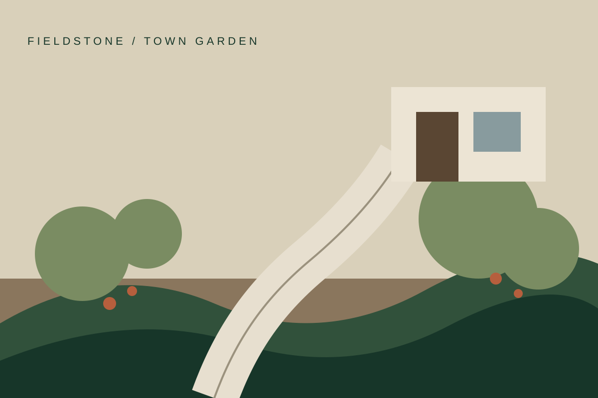
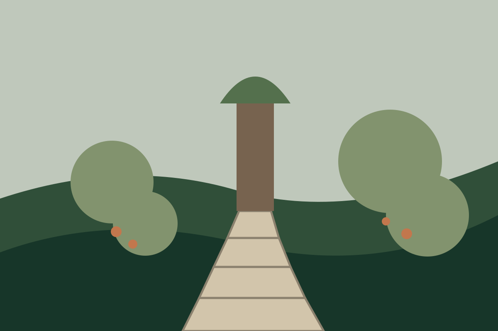
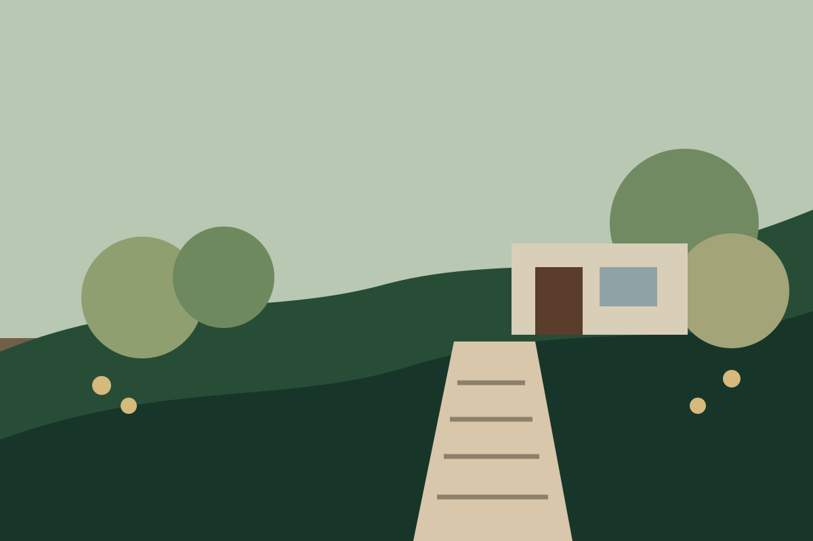

GARDEN / 01
Town garden
Layered planting, permeable walk and late-day gravel terrace.
Filter by the kind of work. Each project combines hardscape, planting and site problem-solving in a different proportion.

Layered planting, permeable walk and late-day gravel terrace.

New steps, retaining wall, lighting and drought-tolerant planting.

Three levels connected with stone, grasses and a small dining terrace.
Low-maintenance courtyard for a small office and client entrance.
Stone paving, seat wall, grill zone and concealed drainage.
Planters, entry lighting and durable seasonal planting for a neighborhood storefront.